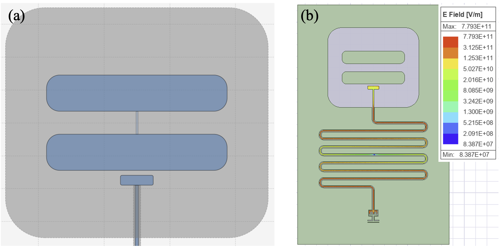

Abstract
- 1Department of Quantum Information Engineering, Sungkyunkwan University, Suwon 16419, Korea.
- 2Department of Advanced Materials Science and Engineering, Sungkyunkwan University, Suwon, 16419, Korea.
- 3SKKU Advanced Institute of Nano Technology (SAINT) and Department of Nano Engineering, Sungkyunkwan University, Suwon 16419, Korea.
Superconducting transmon qubits, a leading platform for quantum computing, rely on a Josephson junction to provide the anharmonicity that isolates the two lowest energy levels as a qubit. Their performance depends on a careful balance: the ratio of Josephson to charging energy, EJ/EC, must be large enough to suppress charge noise yet small enough to retain sufficient anharmonicity [1]. Because both energies are set by the physical layout, designing a qubit means translating target Hamiltonian parameters into device geometry. This work was carried out by undergraduate researchers in an experimental superconducting quantum circuits group at SKKU, using the same electromagnetic simulation tools employed in research-grade qubit design: Quantum Metal, Ansys Q3D, and Ansys HFSS. In this poster, we present the simulation-based design of a single transmon qubit coupled to a readout resonator. Instead of drawing a geometry and reading off its parameters, we first set target values of 5 GHz and −300 MHz for the qubit frequency and anharmonicity, iterated the layout toward them. Capacitances extracted with Q3D were converted into Hamiltonian parameters by lumped oscillator model (LOM) analysis, and tuning the junction inductance, junction capacitance, and pad geometry converged the design to 5.005 GHz, −301 MHz, and EJ/EC=50.6. HFSS eigenmode simulation then placed the readout resonator at 7.266 GHz, a 2.26 GHz detuning suitable for dispersive readout [2].

- J. Koch et al., “Charge-insensitive qubit design derived from the Cooper pair box,” Phys. Rev. A 76, 042319 (2007).
- P. Krantz et al., “A quantum engineer’s guide to superconducting qubits,” Appl. Phys. Rev. 6, 021318 (2019).